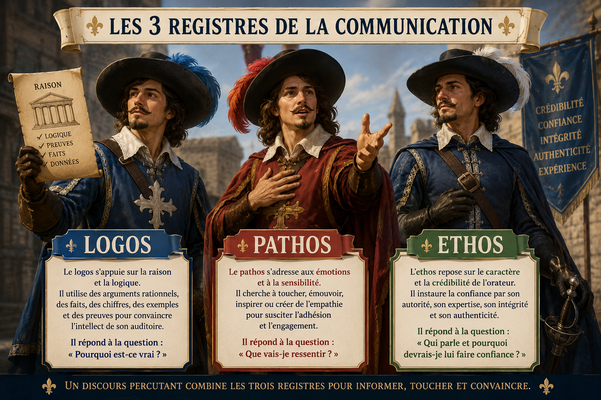

Retrouvez pour chaque situation professionnelle le registre dominant.
💡 À l'issue du test, vous découvrirez le philosophe qui a théorisé ces notions.
C'est le philosophe grec Aristote qui a défini ces notions (le Logos, le Pathos et l'Ethos) dans son ouvrage majeur intitulé La Rhétorique.
Il a vécu durant l'Antiquité au IVe siècle av. J.-C. (plus précisément de 384 à 322 av. J.-C.).